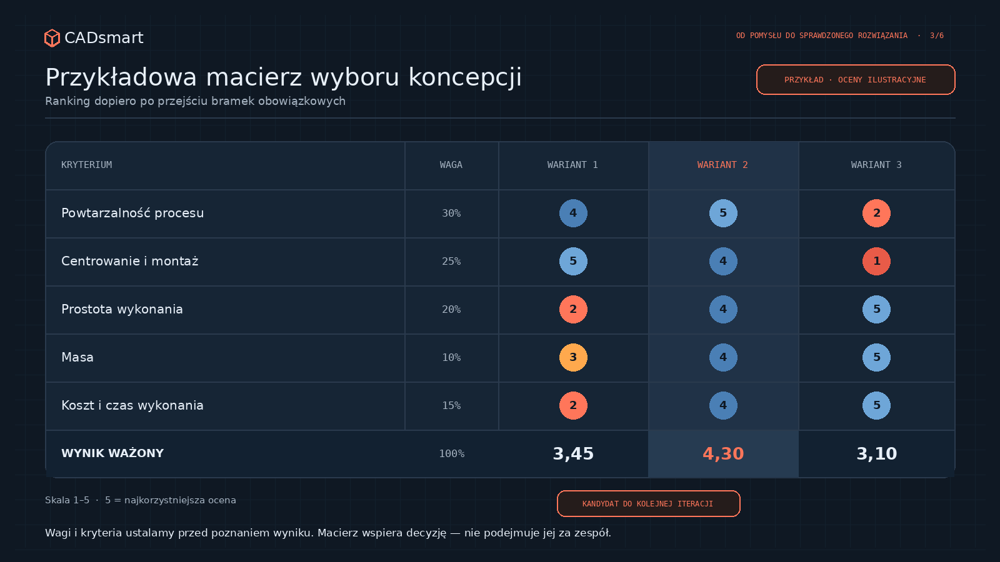

How do you choose when every concept has drawbacks?
Concept selection is not about finding a solution without drawbacks. It is about consciously choosing drawbacks we can understand, control and accept.
Imagine three sleeve designs. The first has centring diameters and adhesive reliefs, so it takes more CNC time. The second is simpler and cheaper. The third is simplest of all. Which one is best?
Choosing “the simplest” can lose the assembly and joint-repeatability battle. Choosing the most elaborate design adds operations, cost and opportunities for manufacture to drift from the model. The middle option is not magically optimal just because it sits in the middle of a table. In a real project, almost no concept wins at everything.
One is lighter, another easier to make, and a third gives a larger margin. Control is particularly important: without it, we never know which direction we are moving in.
1. Every variant answers a different question
While working on a composite control arm, I prepared three variants of an aluminium sleeve bonded into a carbon-fibre tube. All had the same bond length but different geometry. The first had three centring diameters and two adhesive reliefs. The second used two diameters and one relief. The third had a constant diameter along its full length and was the quickest to manufacture.

At first glance, we are comparing three shapes. In practice, each tests a different philosophy. The elaborate variant prioritises positional control and adhesive guidance at the cost of manufacturing complexity. The simple variant prioritises low cost and short machining time but shifts responsibility to assembly. The middle variant attempts to retain centring without multiplying geometric features.
Before comparing concepts, write one sentence for each: what is its advantage, and what do we pay for it? If we cannot name that, we probably have several drawings rather than several deliberately different strategies. Compare different operating principles first; refine dimensions only after selecting a promising principle.
2. Gates first, ranking second
Decision matrices can help, but they should not use points to compensate for a condition that must not be violated. If a joint must carry a defined load, a variant that fails that requirement cannot win because it is cheap and light. A solution that cannot fit into the available space does not become “almost good” by scoring points for aesthetics.
Start with gates: safety, function, mandatory interfaces, regulations, available technology and maximum envelope. A variant that fails a gate is rejected or changed. Only acceptable variants should be compared for mass, cost, manufacturing time, assembly ease, serviceability, operation count and supply risk.

For the sleeves, joint capacity was a requirement. Manufacturing simplicity, mass and adhesive distribution were comparison criteria. If a small change in cost weight changes the winner, the matrix has revealed a preference-dependent tie: revisit priorities or plan a decisive test. Scores need evidence too; “assembly ease 8/10” without observation is still an opinion in a hard hat.
3. Set criteria before seeing the winner
It is easy to tune concept selection to a preferred outcome. Someone falls in love with one option and the team then discovers that “geometry elegance” deserves a weight of ten. That is not necessarily bad faith: people see more benefits in the solution they have spent more time developing.
For a bonded joint, criteria may include load capacity, sleeve centring, control of adhesive thickness and distribution, resistance to assembly errors, manufacturing and inspection simplicity, mass, envelope and repeatable preparation of parts. Criteria should describe the whole way the solution works, not just geometry. Part price is not total cost: include fixtures, setup, inspection and scrap risk, and state the stage and volume for which the assessment applies.
4. Uncertainty is a criterion in its own right
Two variants may score similarly, yet we may know a great deal about one and almost nothing about the other. A simple scoring table can hide that. A simple variant may score well for mass and manufacture while we do not know whether curing will maintain axial alignment and a consistent adhesive layer. A more complex one may weigh a few grams more but constrain component movement and force the assembly position.
The sleeve tests showed this clearly. In the simplest option, the absence of centring diameters allowed adhesive to push two sleeves out of the tubes during curing. Those specimens were rejected before strength testing. That does not mean a simple shape is always bad; surface preparation and adhesive also affected the result. It did show that removing a geometric feature had moved risk into the process.
Record confidence alongside every score: what is known from data, calculations and experience, and what is only a reasonable hypothesis. A high score with low confidence should prompt a question: what is the cheapest way to test that uncertainty?
5. The best variant is often the one worth testing next
At concept stage, we do not always have the data for a final choice. Rather than selecting something “for production”, we can select a candidate for the next iteration.
- reject variants that fail requirements;
- compare the rest against previously agreed criteria;
- identify unknowns that could change the ranking;
- design the cheapest decisive evidence for the most important one;
- update the decision after the result.
This is not indecision. It is consciously buying information before buying tooling, parts and problems. In the sleeve study, the two-centring-diameter variant was simpler than the most elaborate one while producing more repeatable results. It still did not reach the required capacity, so it was not the project winner — it was the best candidate for further, improved testing.
We choose a trade-off, not an ideal
A good concept decision does not remove a solution’s drawbacks. It shows which ones we accept, why, and how we will control them. The dangerous option is not one with drawbacks; it is one whose drawbacks were never named because we liked its advantages too much.
In the next article, I will show what calculations, simulation and testing really confirm in this process, and why none of them should declare victory alone.
Review your concept selection
Do you want to check whether the team is comparing strategies rather than merely drawings?
View 9 review questions
- Does every concept state its advantage and the cost of that advantage?
- Do variants differ in operating principle rather than only dimensions?
- Are mandatory requirements separated from optimisation criteria?
- Can no variant that fails a gate win the ranking?
- Were criteria and weights agreed before the result was known?
- Do scores have data, observations or experience behind them?
- Does cost include assembly, inspection, fixtures and scrap risk?
- Is the level of confidence recorded alongside every assessment?
- Does the greatest uncertainty have the cheapest possible decisive test?
Want to save these questions for later?